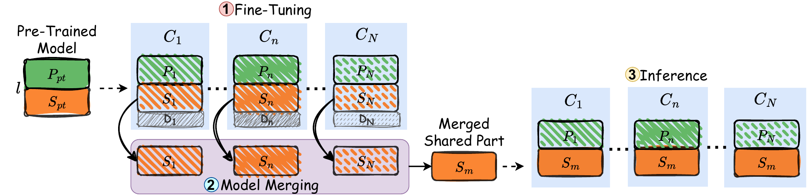
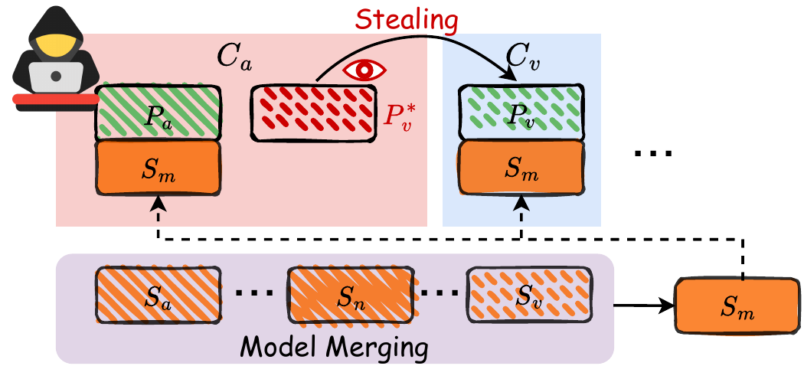
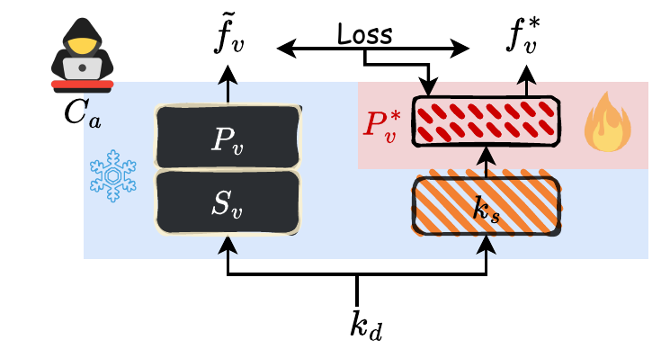
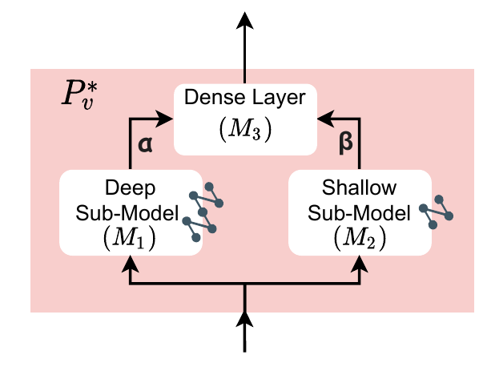
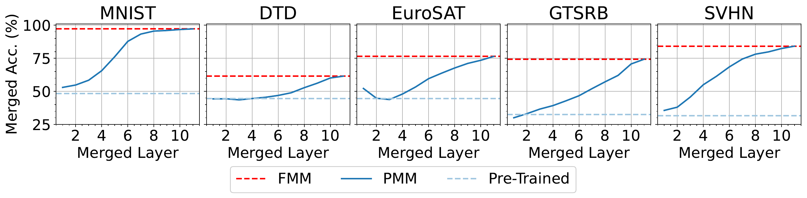
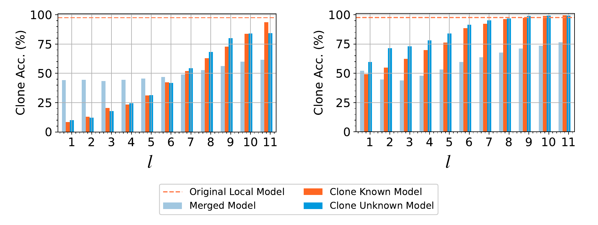
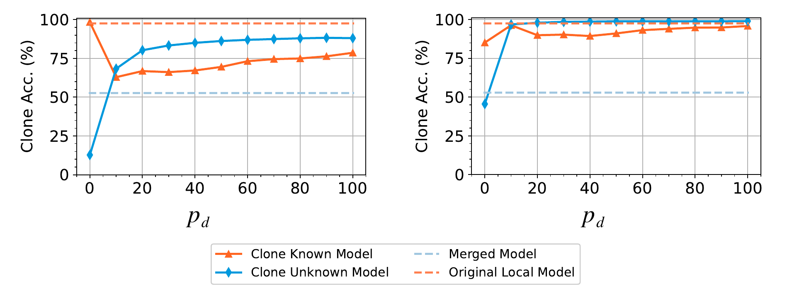

Abstract
Model merging is a promising technique to enhance the capabilities of neural networks by integrating multiple downstream fine-tuned models without requiring access to clients' raw data or substantial computation resources. However, conventional model merging typically requires collecting the full set of fine-tuned parameters from multiple clients, which may expose them to model-privacy risks.
An emerging approach, partial model merging (PMM), mitigates this risk by splitting the model into private and shared parts, where only the shared part is merged while the private part remains local to each client. Despite its stricter parameter fusion, PMM can still achieve competitive performance compared to full-parameter sharing.
We propose ModelPirate, a model clone attack that assesses the risk of reconstructing the unshared private part of a partially merged model under eight attack scenarios with varying prior knowledge, including partial training data, model parameters, and model structure. Our experiments reveal that merging neural networks without adequate protection remains highly vulnerable.
Overview
Partial model merging partitions a fine-tuned model into a shared part and a private part. Only the shared layers are sent to a merging entity; the private layers stay local to each client.
Core question: How would model privacy be affected by sharing a subset of model parameters for merging?
Our empirical results show a privacy--utility tradeoff: sharing more layers improves PMM utility but can also increase the feasibility of model clone attacks.

Partial model merging: fine-tune, split, merge the shared part, and reconnect the private part.
ModelPirate Attack

The adversary constructs a clone private part to mimic the victim private model behaviour.

Clone training freezes the known shared component and trains only the cloned private part.

When the private structure is unknown, the clone model uses a deep-shallow design to balance capacity and generalization.
Threat model
The adversary is an honest-but-curious participant in the PMM process. Given different combinations of prior knowledge, it trains a clone private part Pv* to simulate the victim's private part Pv.
Main Results

PMM accuracy generally improves as more layers are merged, but each additional shared layer can increase privacy exposure.
For ViT-B/32, merging 75% of layers retains at least 85.89% of full-model-merging accuracy while reducing communication/computation cost to about 75% of FMM.
ModelPirate reveals that a small amount of leakage can be enough to reconstruct significant portions of the victim model's private-task performance.

Clone accuracy across different numbers of merged layers.

Clone accuracy across different proportions of known victim data.
Benchmark Summary
Table I compares ModelPirate with Knockoff, JBDA, and Random clone baselines under default hyperparameters. Bold values indicate clone accuracy exceeding the merged-model accuracy.
| EuroSAT→DTD | DTD→EuroSAT | |||||
|---|---|---|---|---|---|---|
| Attack Method | ViT-B/32 | ViT-B/16 | ViT-L/14 | ViT-B/32 | ViT-B/16 | ViT-L/14 |
| Merged Acc. | 52.77% | 54.84% | 72.50% | 67.67% | 79.11% | 95.04% |
| Knockoff | 7.18% | 7.18% | 2.13% | 52.22% | 57.22% | 16.70% |
| JBDA | 3.88% | 3.56% | 3.19% | 23.48% | 29.33% | 18.63% |
| Random | 2.93% | 2.13% | 35.37% | 10.44% | 12.67% | 38.70% |
| AS[000] | 2.39% | 2.45% | 1.91% | 15.74% | 17.89% | 14.74% |
| AS[100] | 37.27% | 8.54% | 2.44% | 53.74% | 31.07% | 23.61% |
| AS[010] | 2.66% | 2.45% | 65.37% | 48.52% | 54.70% | 93.81% |
| AS[001] | 18.88% | 26.22% | 20.53% | 60.07% | 60.04% | 59.67% |
| AS[101] | 68.35% | 60.79% | 31.23% | 96.83% | 95.81% | 79.37% |
| AS[011] | 49.89% | 56.81% | 82.82% | 65.52% | 68.22% | 73.37% |
| AS[110] | 85.15% | 78.40% | 97.87% | 98.38% | 98.93% | 52.54% |
| AS[111] | 62.89% | 65.42% | 98.19% | 96.34% | 96.52% | 63.22% |
BibTeX
@inproceedings{wu2026modelpirate,
title = {An Empirical Study on the Resilience of Partial Merging to Model Clone Attacks},
author = {Tiantong Wu and Yurong Hao and Wei Yang Bryan Lim},
booktitle = {Forty-third International Conference on Machine Learning (ICML)},
year = {2026}
}